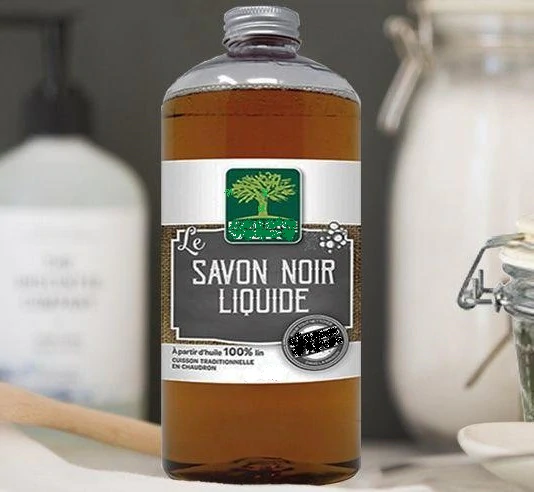

Droguerie

Savon noir liquide
Allié de nos grands mères, le Savon Noir liquide traditionnel Bulle Verte® est un Savon pur végétal Olive et Lin. Il lave, nettoie, dégraisse et fait briller : sols, carrelages, parquets, tomettes, fours, hottes, vitrocéramiques, vitres, linges, cuivres, argenteries….
Il n’abîme pas les revêtements mais les protège. Le Lin a un rôle nutritif, siccatif, pénétrant et hydrofuge. Quant à l’olive, elle adoucit et protège. Multi-usages par excellence, il s'utilise à la maison du sol au plafond mais aussi pour l'entretien du linge en complément de votre lessive.
Vinaigre blanc à usage ménager 14%
Vinaigre blanc à usage ménager 14%
Le vinaigre Blanc Bulle Verte® détartre et fait briller votre cuisine et votre salle de bain. Il est aussi un bel allier pour votre linge, il adoucit et protège votre machine. Produit ultra concentré qui vous permettra de diluer selon vos besoins, et faire des économies. 100% des ingrédients sont d'origine naturelle.
! Produit à usage ménager !
Percarbonate de soude